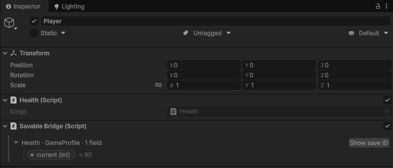
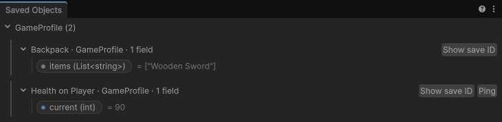
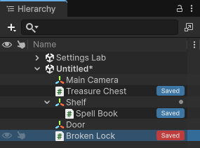

Debug and inspect 0 no code
Four places show what the save system holds. None of them has a button that changes your data.
On the object#
Select a GameObject with a Savable Bridge. Its inspector draws one card per saved script, in component order. Each header reads like "Chest · Scene · 3 fields"; a script that appears twice reads "Chest (1)" and "Chest (2)".

Open a card to see each saved field with its type, and "was: hp" under a field renamed with [Save(Formerly = "hp")]. In play mode, an open card also shows each field's current value, refreshed twice a second. The Show save ID button reveals the ID the object registered under, with a Copy save ID button next to it.
The Saved Objects window#
Open Tools > External Project Tools > Save System > Saved Objects. In edit mode it only says to enter play mode. In play mode it lists every registered saved object, grouped by save file, with Scene files split by scene.

Each object is the same card as on the GameObject, named "Chest on Chest 2" for a script on a GameObject or by class name for a plain class. Objects that are Unity objects get a Ping button. Plain classes and ScriptableObjects show up here and nowhere else; the window is read only.
In the Hierarchy#
A GameObject with at least one saved script gets a small Saved badge at the right of its row. Its tooltip lists what it saves, such as "Saves: Chest, Save Transform (Scene)". The badge turns red when a saved script on that GameObject has a mistake.

Editor tools#
Every save system tool lives under Tools > External Project Tools > Save System.
| Menu item | What it does |
|---|---|
| Open Guide | Opens this guide. |
| Create Config | Creates the save system config, or selects it if it already exists. |
| Update Glossary Data | Writes assets/glossary-data.js (the term tooltips) from GLOSSARY.md. Run it after editing the glossary. |
| Saved Objects | Opens the window above. |
| Save All, Load All | Saves or reloads everything. Play mode only. |
| Open Release Folder, Open Debug Folder | Opens the save folder for that build type. |
| Delete All Save Files | Asks first, then deletes every save file and backup. |
The ? button in a component's inspector header opens this guide at the right page, the way Unity's own components open their manual page. It's also in the Saved Objects window's tab bar.
Files on disk#
A save never leaves a half-written file. The save system writes a temporary file first, then swaps it in. Backups sit in their own folder with the same layout.
SaveFiles/
Global/
Settings.json
SaveSystemMetaData.json
GameProfiles/
a1b2c3/
GameProfileManifest.json
GameProfile.json
Scenes/Forest/Scene.json
Backups/
Global/Settings.json
GameProfiles/a1b2c3/GameProfile.json{
"FormatVersion": 2,
"ProfileID": "a1b2c3",
"FileName": "GameProfile",
"Entries": {
"5eecb91f.../27062df3...": {
"name": "Assets/Scenes/Level.unity/Player/Health",
"data": { "current": 40 }
},
"9b1c44d0.../a7e2f310...": {
"name": "Assets/Scenes/Level.unity/Coin (3)/Coin",
"gone": true
}
}
}The save system matches entries by save ID; the name field is only for people reading the file. With Backup ticked, a broken file loads its backup and logs a warning; with Backup unticked, a broken file logs one error and loads nothing.
Mistakes the editor blocks#
A blocking mistake logs one error naming the type, the field and the fix, stops play mode from starting, and fails the build. The save system blocks:
[Save]on a field holding a GameObject, a component or an asset.[Save]on astatic,constorreadonlyfield.[Save]on a delegate, an interface, an abstract class or anobjectfield.- A class with both
[Save]fields andISavable.
The same text appears on the saved script's card in the inspector, as a red box.